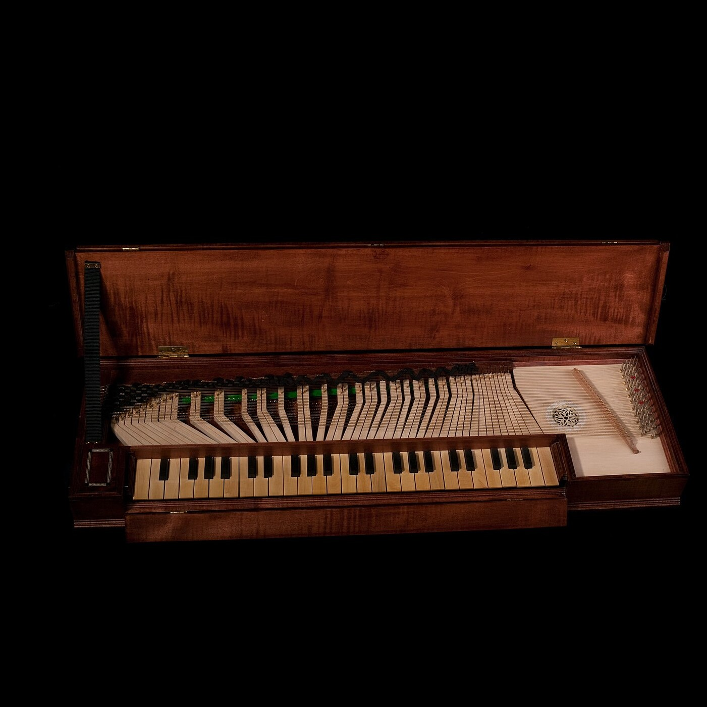
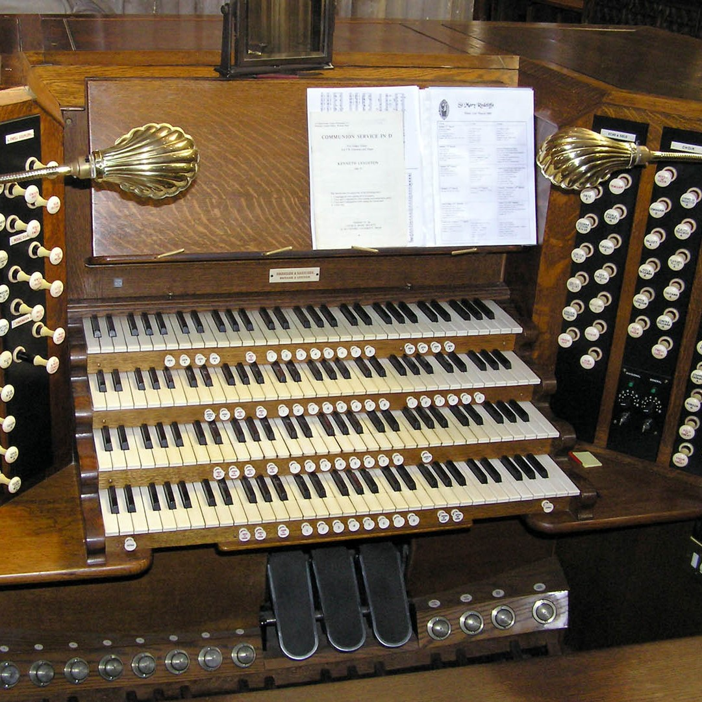
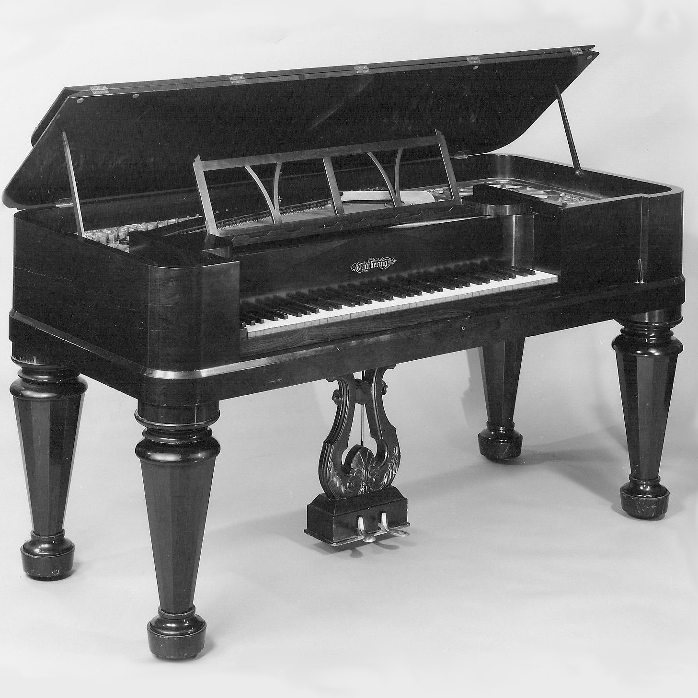
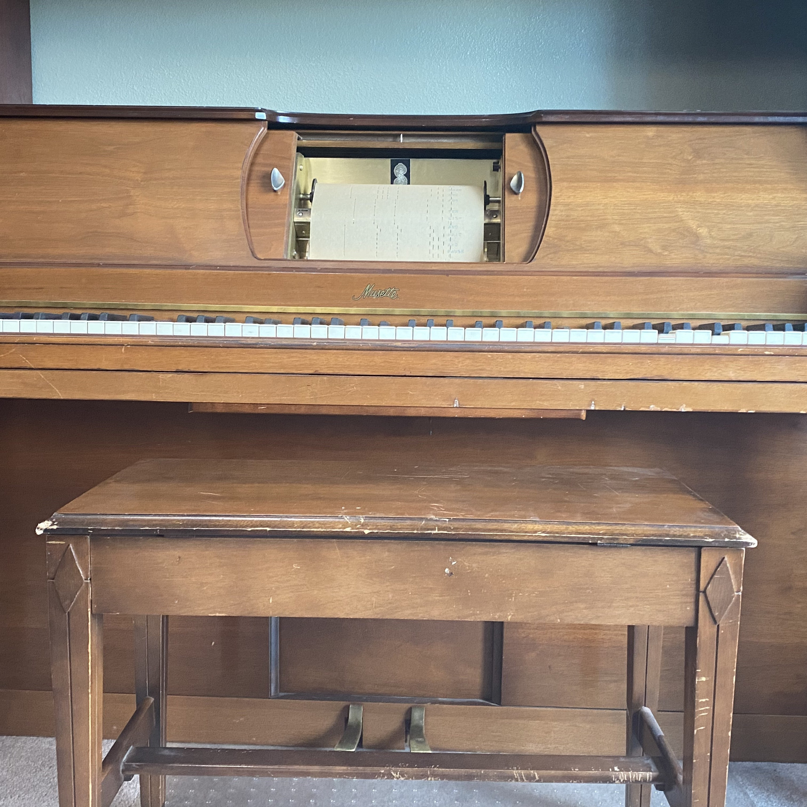
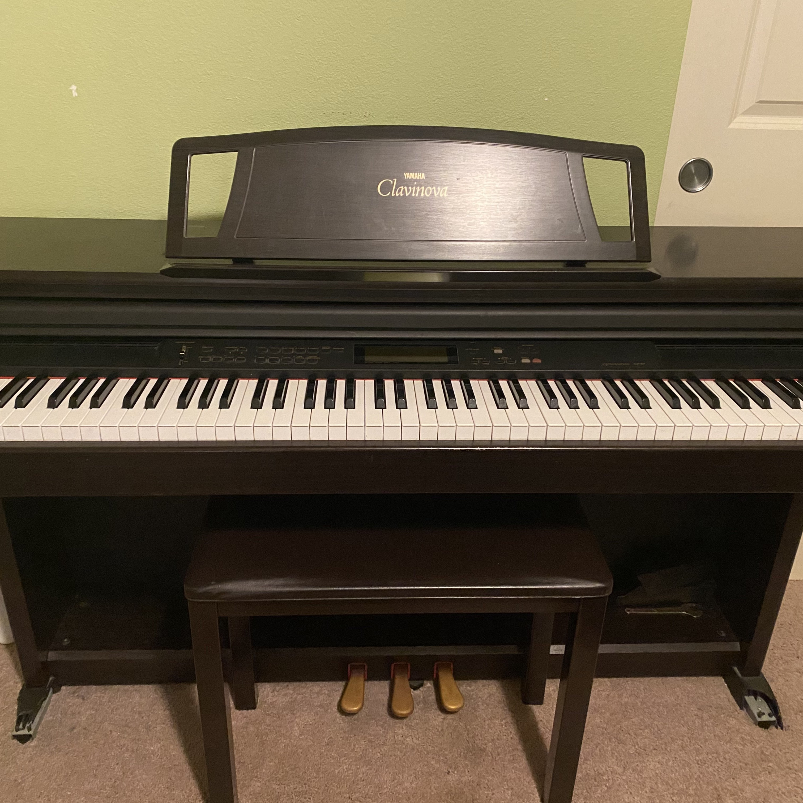
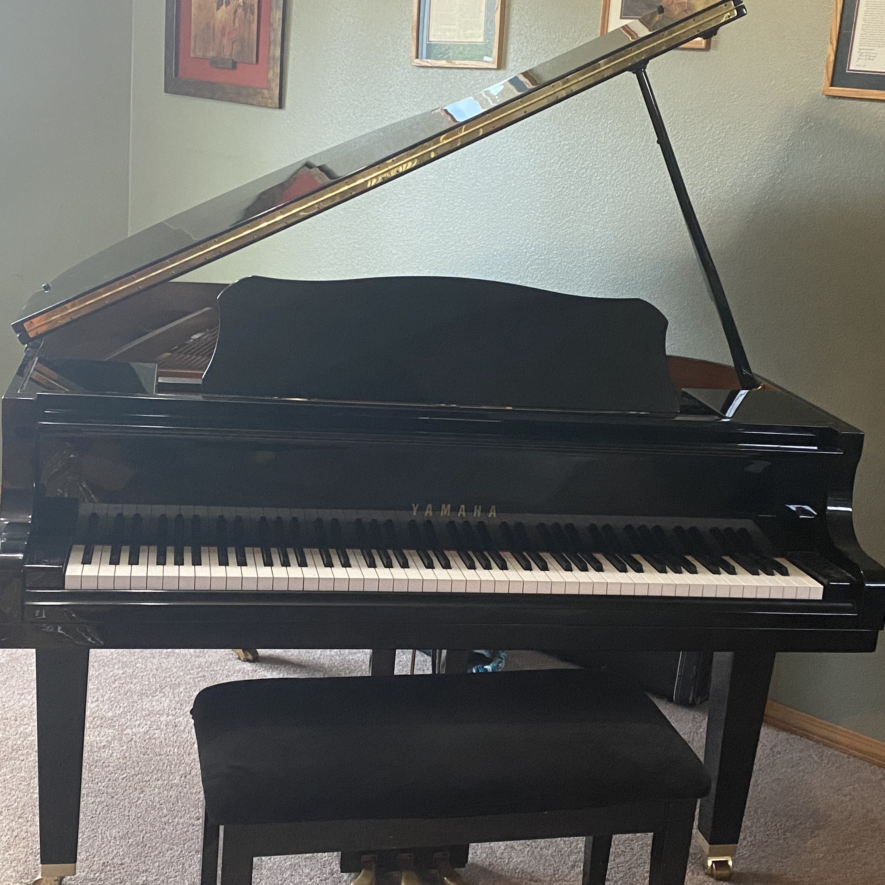
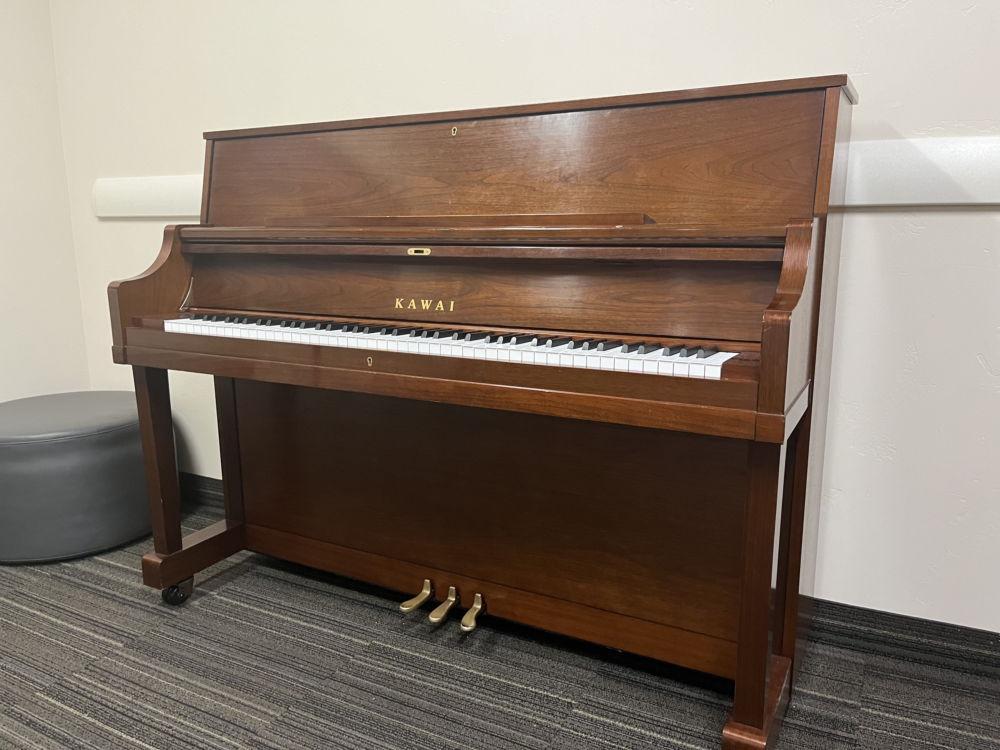
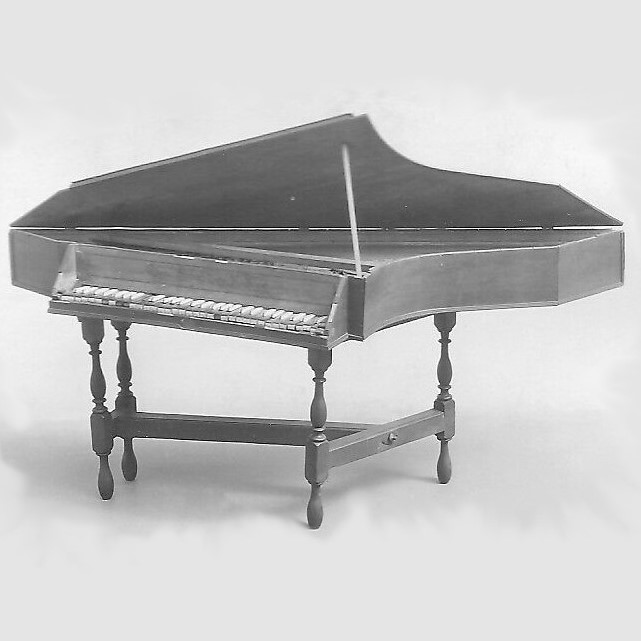
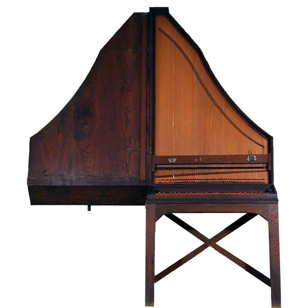

/Piano_History-logos_transparent.png)
Monochord

A monochord is a simple musical instrument consisting of just one string stretched over a resonating box or soundboard. It's historically significant as a tool for exploring musical intervals and harmony. Adjusting the string's tension or length demonstrates how vibrations create different pitches, aiding in understanding the relationships between musical tones and mathematical ratios.
Harpsichord

Description
Clavichord
Description
Pipe Organ
A pipe organ is a complex instrument that generates sound by pushing air through various pipes of different sizes and materials. It has keyboards and pedals for controlling airflow to the pipes, producing a wide range of tones. Found in churches and concert halls, the organ is revered for its versatility and ability to create a vast array of sounds, making it a significant instrument in classical music.
Square Piano
Description
Player Piano
Description
Electric Piano
An electric piano is a keyboard instrument that uses electronics to replicate the sound of an acoustic piano. It produces sound through electronic means, offering versatility and portability compared to traditional pianos, becoming popular across different music genres for its amplified sound and various effects.
Grand Piano
A grand piano is a sizable horizontal instrument recognized for its distinctive curved shape. It creates rich, resonant tones through strings, hammers, and keys, offering exceptional sound quality and a wide dynamic range. Often favored by professional musicians, it's a prominent choice for performances due to its superior sound capabilities.
Upright Piano
An upright piano is a vertical instrument with strings and hammers positioned vertically within a wooden frame. Its space-saving design makes it ideal for home use, providing a smaller and more affordable alternative to grand pianos while offering a traditional sound suitable for practice and smaller performances.
Fortepiano

The fortepiano is an early version of the piano, originating in the 18th century. It resembles the modern piano but has distinct differences. It typically has a lighter and smaller frame, with a wooden or leather-covered hammers that strike the strings. The fortepiano was notable for its ability to produce a wider range of dynamics (from soft to loud, hence the name "fortepiano") compared to its predecessor, the harpsichord. Its mechanism allowed for variations in touch sensitivity and expressive playing, paving the way for the development of the modern piano.
Spinet
Description
Clavicytherium
Description